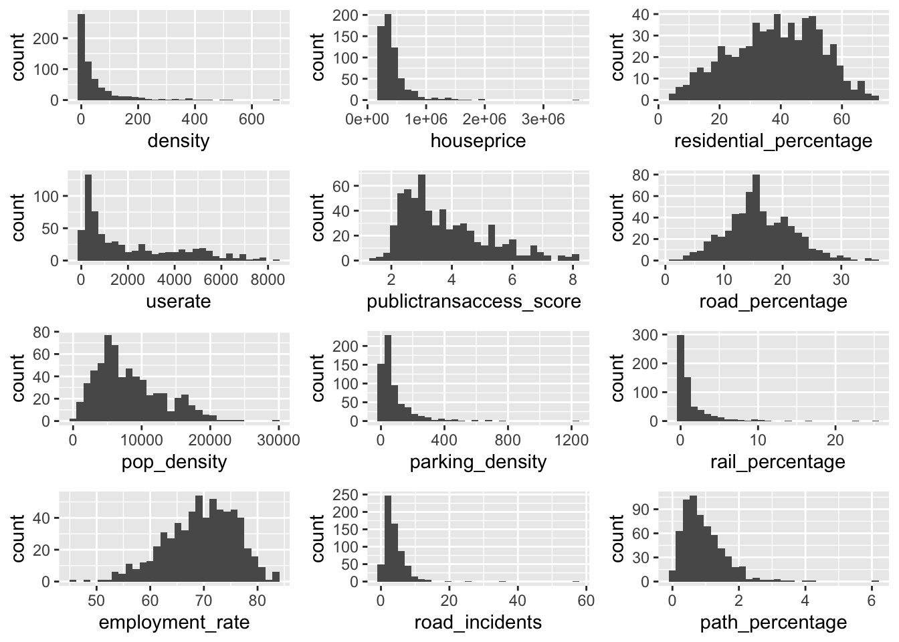
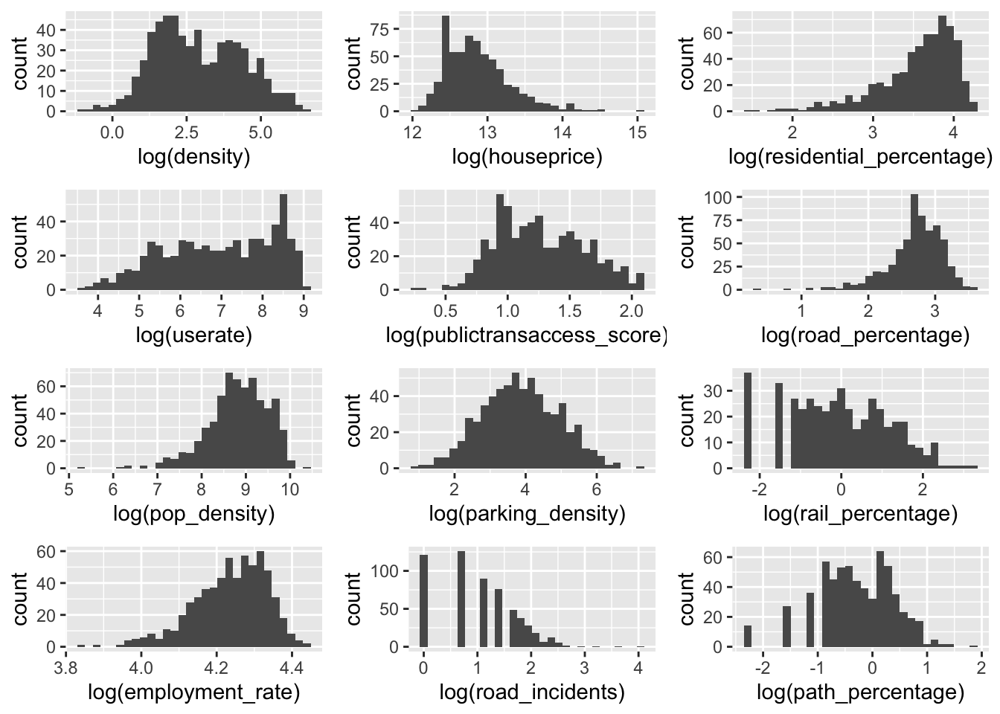
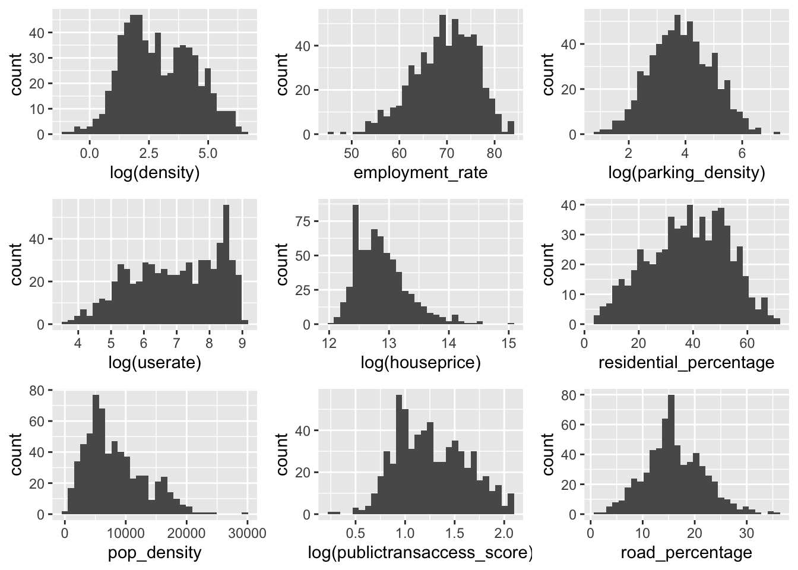
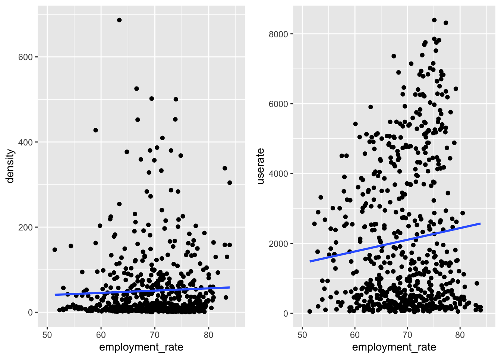
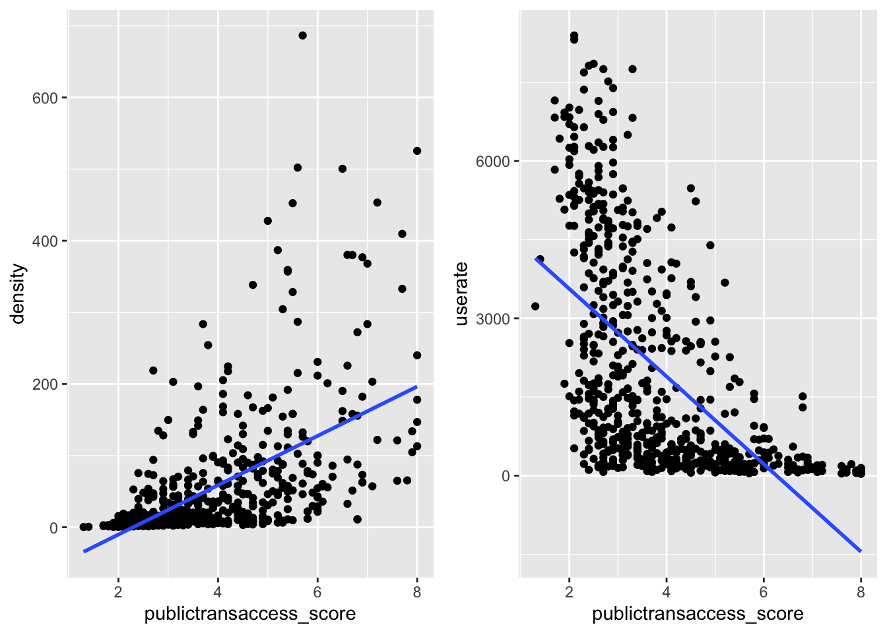
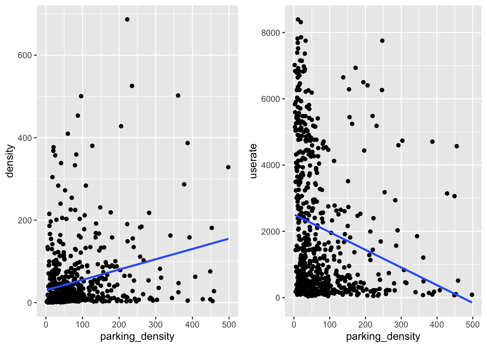
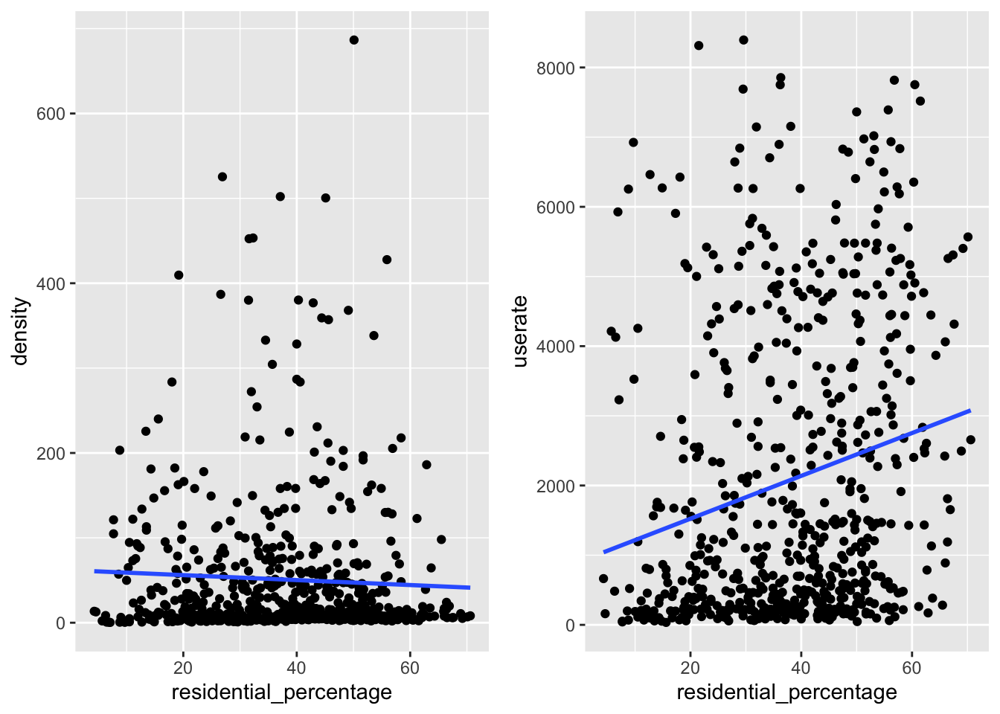
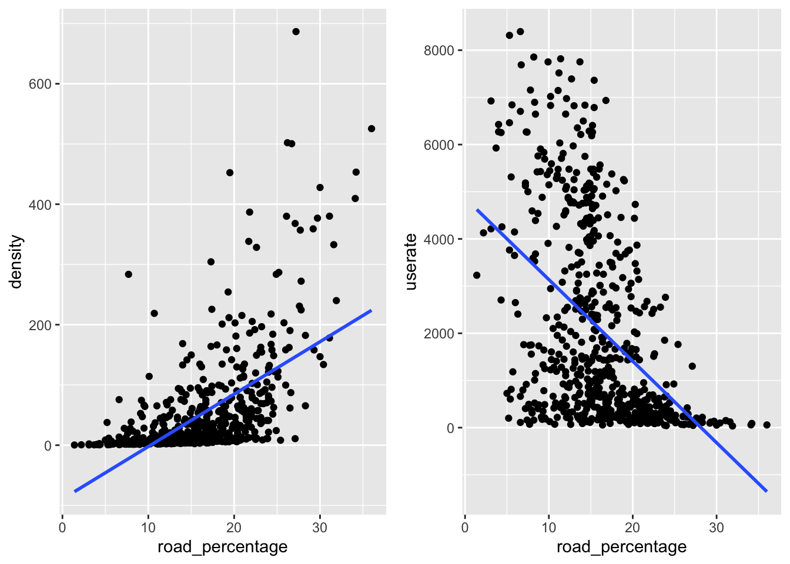

Chapter 4 Statistical Correlation Analysis
There are several characteristics are considered to contribute to the density of charge points (CD) and its utilization rates (UR), including socio-demographic, travel-related and land-use characteristics. In specific, they are employment rate (ER), house price (HP), public transit score (PS), which could reflect the level of local public transport), parking density (PD), percentage of residential area (RSP) and percentage of road area (RP).
4.1 Load packages
4.1.1 Load plot library
## Loading required package: lattice## Loading required package: plyr## --------------------------------------------------------------------------------------------------## You have loaded plyr after dplyr - this is likely to cause problems.
## If you need functions from both plyr and dplyr, please load plyr first, then dplyr:
## library(plyr); library(dplyr)## --------------------------------------------------------------------------------------------------##
## Attaching package: 'plyr'## The following objects are masked from 'package:dplyr':
##
## arrange, count, desc, failwith, id, mutate, rename, summarise, summarize## The following object is masked from 'package:purrr':
##
## compact4.1.2 Load model library
## Loading required package: carData##
## Attaching package: 'car'## The following object is masked from 'package:dplyr':
##
## recode## The following object is masked from 'package:purrr':
##
## some## Loading required package: spatstat.data## Loading required package: nlme##
## Attaching package: 'nlme'## The following object is masked from 'package:dplyr':
##
## collapse## Loading required package: rpart## Registered S3 method overwritten by 'spatstat':
## method from
## print.boxx cli##
## spatstat 1.64-1 (nickname: 'Help you I can, yes!')
## For an introduction to spatstat, type 'beginner'##
## Note: spatstat version 1.64-1 is out of date by more than 8 months; we recommend upgrading to the latest version.##
## Attaching package: 'spatstat'## The following object is masked _by_ '.GlobalEnv':
##
## densityfun## The following objects are masked from 'package:car':
##
## bc, ellipse## The following object is masked from 'package:lattice':
##
## panel.histogram## ── Attaching packages ────────────────────────────────────────────────────────── tidymodels 0.1.2 ──## ✓ broom 0.7.2 ✓ recipes 0.1.15
## ✓ dials 0.0.9 ✓ rsample 0.0.8
## ✓ infer 0.5.3 ✓ tune 0.1.2
## ✓ modeldata 0.1.0 ✓ workflows 0.2.1
## ✓ parsnip 0.1.4 ✓ yardstick 0.0.7## ── Conflicts ───────────────────────────────────────────────────────────── tidymodels_conflicts() ──
## x plyr::arrange() masks dplyr::arrange()
## x nlme::collapse() masks dplyr::collapse()
## x plyr::compact() masks purrr::compact()
## x plyr::count() masks dplyr::count()
## x scales::discard() masks purrr::discard()
## x plyr::failwith() masks dplyr::failwith()
## x dplyr::filter() masks stats::filter()
## x recipes::fixed() masks stringr::fixed()
## x plyr::id() masks dplyr::id()
## x dplyr::lag() masks stats::lag()
## x plyr::mutate() masks dplyr::mutate()
## x tune::parameters() masks dials::parameters(), spatstat::parameters()
## x dials::prune() masks rpart::prune()
## x car::recode() masks dplyr::recode()
## x plyr::rename() masks dplyr::rename()
## x car::some() masks purrr::some()
## x yardstick::spec() masks readr::spec()
## x recipes::step() masks stats::step()
## x plyr::summarise() masks dplyr::summarise()
## x plyr::summarize() masks dplyr::summarize()
## x parsnip::translate() masks rgeos::translate()## Loading required package: Matrix##
## Attaching package: 'Matrix'## The following objects are masked from 'package:tidyr':
##
## expand, pack, unpack## Registered S3 methods overwritten by 'spatialreg':
## method from
## residuals.stsls spdep
## deviance.stsls spdep
## coef.stsls spdep
## print.stsls spdep
## summary.stsls spdep
## print.summary.stsls spdep
## residuals.gmsar spdep
## deviance.gmsar spdep
## coef.gmsar spdep
## fitted.gmsar spdep
## print.gmsar spdep
## summary.gmsar spdep
## print.summary.gmsar spdep
## print.lagmess spdep
## summary.lagmess spdep
## print.summary.lagmess spdep
## residuals.lagmess spdep
## deviance.lagmess spdep
## coef.lagmess spdep
## fitted.lagmess spdep
## logLik.lagmess spdep
## fitted.SFResult spdep
## print.SFResult spdep
## fitted.ME_res spdep
## print.ME_res spdep
## print.lagImpact spdep
## plot.lagImpact spdep
## summary.lagImpact spdep
## HPDinterval.lagImpact spdep
## print.summary.lagImpact spdep
## print.sarlm spdep
## summary.sarlm spdep
## residuals.sarlm spdep
## deviance.sarlm spdep
## coef.sarlm spdep
## vcov.sarlm spdep
## fitted.sarlm spdep
## logLik.sarlm spdep
## anova.sarlm spdep
## predict.sarlm spdep
## print.summary.sarlm spdep
## print.sarlm.pred spdep
## as.data.frame.sarlm.pred spdep
## residuals.spautolm spdep
## deviance.spautolm spdep
## coef.spautolm spdep
## fitted.spautolm spdep
## print.spautolm spdep
## summary.spautolm spdep
## logLik.spautolm spdep
## print.summary.spautolm spdep
## print.WXImpact spdep
## summary.WXImpact spdep
## print.summary.WXImpact spdep
## predict.SLX spdep##
## Attaching package: 'spatialreg'## The following objects are masked from 'package:spdep':
##
## anova.sarlm, as_dgRMatrix_listw, as_dsCMatrix_I, as_dsCMatrix_IrW,
## as_dsTMatrix_listw, as.spam.listw, bptest.sarlm, can.be.simmed, cheb_setup,
## coef.gmsar, coef.sarlm, coef.spautolm, coef.stsls, create_WX, deviance.gmsar,
## deviance.sarlm, deviance.spautolm, deviance.stsls, do_ldet, eigen_pre_setup,
## eigen_setup, eigenw, errorsarlm, fitted.gmsar, fitted.ME_res, fitted.sarlm,
## fitted.SFResult, fitted.spautolm, get.ClusterOption, get.coresOption, get.mcOption,
## get.VerboseOption, get.ZeroPolicyOption, GMargminImage, GMerrorsar, griffith_sone,
## gstsls, Hausman.test, HPDinterval.lagImpact, impacts, intImpacts, Jacobian_W,
## jacobianSetup, l_max, lagmess, lagsarlm, lextrB, lextrS, lextrW, lmSLX, logLik.sarlm,
## logLik.spautolm, LR.sarlm, LR1.sarlm, LR1.spautolm, LU_prepermutate_setup, LU_setup,
## Matrix_J_setup, Matrix_setup, mcdet_setup, MCMCsamp, ME, mom_calc, mom_calc_int2,
## moments_setup, powerWeights, predict.sarlm, predict.SLX, print.gmsar, print.ME_res,
## print.sarlm, print.sarlm.pred, print.SFResult, print.spautolm, print.stsls,
## print.summary.gmsar, print.summary.sarlm, print.summary.spautolm,
## print.summary.stsls, residuals.gmsar, residuals.sarlm, residuals.spautolm,
## residuals.stsls, sacsarlm, SE_classic_setup, SE_interp_setup, SE_whichMin_setup,
## set.ClusterOption, set.coresOption, set.mcOption, set.VerboseOption,
## set.ZeroPolicyOption, similar.listw, spam_setup, spam_update_setup, SpatialFiltering,
## spautolm, spBreg_err, spBreg_lag, spBreg_sac, stsls, subgraph_eigenw, summary.gmsar,
## summary.sarlm, summary.spautolm, summary.stsls, trW, vcov.sarlm, Wald1.sarlm4.2 Load files
4.2.1 Load London wards shapefile
## Reading layer `London_Ward_CityMerged' from data source `/Users/apple/OneDrive - University College London/Module assessment/CASA_project/casa_project/datasets/wards/London_Ward_CityMerged.shp' using driver `ESRI Shapefile'
## Simple feature collection with 625 features and 7 fields
## geometry type: POLYGON
## dimension: XY
## bbox: xmin: 503568.2 ymin: 155850.8 xmax: 561957.5 ymax: 200933.9
## projected CRS: OSGB 1936 / British National Grid4.2.2 Load points in wards
##
## ── Column specification ────────────────────────────────────────────────────────────────────────────
## cols(
## gss_code = col_character(),
## density = col_double(),
## percentage = col_double(),
## wardname = col_character(),
## chargepointcount = col_double()
## )## gss_code density percentage wardname chargepointcount
## Length:625 Min. : 0.3444 Min. :0.001479 Length:625 Min. : 1.000
## Class :character 1st Qu.: 5.8152 1st Qu.:0.001479 Class :character 1st Qu.: 1.000
## Mode :character Median : 15.6903 Median :0.004436 Mode :character Median : 3.000
## Mean : 50.7528 Mean :0.010053 Mean : 6.798
## 3rd Qu.: 58.0526 3rd Qu.:0.011830 3rd Qu.: 8.000
## Max. :686.6051 Max. :0.075417 Max. :51.0004.2.3 Load wards profile
Load London wards profile as the basic data frame for correlation analysis
ward_profile <- read_csv("datasets/ward_profiles.csv",
col_types = cols(
"New code" = col_character(),
"% All Working-age (16-64) - 2015"= col_number(),
"Population density (persons per sq km) - 2013"= col_number(),
"Number Killed or Seriously Injured on the roads - 2014" = col_number(),
"Employment rate (16-64) - 2011" = col_number(),
"Median House Price (£) - 2014" = col_number(),
"Cars per household - 2011" = col_number(),
"Average Public Transport Accessibility score - 2014"= col_number()
))## Warning: 6 parsing failures.
## row col expected actual file
## 660 Average Public Transport Accessibility score - 2014 a number n/a 'datasets/ward_profiles.csv'
## 661 % All Working-age (16-64) - 2015 a number GLA SHLAA Trend based Population Projection data, and Mid year estimates 'datasets/ward_profiles.csv'
## 661 Population density (persons per sq km) - 2013 a number GLA SHLAA Trend based Population Projection data 'datasets/ward_profiles.csv'
## 661 Number Killed or Seriously Injured on the roads - 2014 a number London Ambulance Service 'datasets/ward_profiles.csv'
## 661 Median House Price (£) - 2014 a number Land Registry 'datasets/ward_profiles.csv'
## ... ...................................................... ........ ........................................................................ ............................
## See problems(...) for more details.## [1] "Ward name"
## [2] "Old code"
## [3] "New code"
## [4] "Population - 2015"
## [5] "Children aged 0-15 - 2015"
## [6] "Working-age (16-64) - 2015"
## [7] "Older people aged 65+ - 2015"
## [8] "% All Children aged 0-15 - 2015"
## [9] "% All Working-age (16-64) - 2015"
## [10] "% All Older people aged 65+ - 2015"
## [11] "Mean Age - 2013"
## [12] "Median Age - 2013"
## [13] "Area - Square Kilometres"
## [14] "Population density (persons per sq km) - 2013"
## [15] "% BAME - 2011"
## [16] "% Not Born in UK - 2011"
## [17] "% English is First Language of no one in household - 2011"
## [18] "General Fertility Rate - 2013"
## [19] "Male life expectancy -2009-13"
## [20] "Female life expectancy -2009-13"
## [21] "% children in reception year who are obese - 2011/12 to 2013/14"
## [22] "% children in year 6 who are obese- 2011/12 to 2013/14"
## [23] "Rate of All Ambulance Incidents per 1,000 population - 2014"
## [24] "Rates of ambulance call outs for alcohol related illness - 2014"
## [25] "Number Killed or Seriously Injured on the roads - 2014"
## [26] "In employment (16-64) - 2011"
## [27] "Employment rate (16-64) - 2011"
## [28] "Number of jobs in area - 2013"
## [29] "Employment per head of resident WA population - 2013"
## [30] "Rate of new registrations of migrant workers - 2011/12"
## [31] "Median House Price (£) - 2014"
## [32] "Number of properties sold - 2014"
## [33] "Median Household income estimate (2012/13)"
## [34] "Number of Household spaces - 2011"
## [35] "% detached houses - 2011"
## [36] "% semi-detached houses - 2011"
## [37] "% terraced houses - 2011"
## [38] "% Flat, maisonette or apartment - 2011"
## [39] "% Households Owned - 2011"
## [40] "% Households Social Rented - 2011"
## [41] "% Households Private Rented - 2011"
## [42] "% dwellings in council tax bands A or B - 2015"
## [43] "% dwellings in council tax bands C, D or E - 2015"
## [44] "% dwellings in council tax bands F, G or H - 2015"
## [45] "Claimant rate of key out-of-work benefits (working age client group) (2014)"
## [46] "Claimant Rate of Housing Benefit (2015)"
## [47] "Claimant Rate of Employment Support Allowance - 2014"
## [48] "Rate of JobSeekers Allowance (JSA) Claimants - 2015"
## [49] "% dependent children (0-18) in out-of-work households - 2014"
## [50] "% of households with no adults in employment with dependent children - 2011"
## [51] "% of lone parents not in employment - 2011"
## [52] "(ID2010) - Rank of average score (within London) - 2010"
## [53] "(ID2010) % of LSOAs in worst 50% nationally - 2010"
## [54] "Average GCSE capped point scores - 2014"
## [55] "Unauthorised Absence in All Schools (%) - 2013"
## [56] "% with no qualifications - 2011"
## [57] "% with Level 4 qualifications and above - 2011"
## [58] "A-Level Average Point Score Per Student - 2013/14"
## [59] "A-Level Average Point Score Per Entry; 2013/14"
## [60] "Crime rate - 2014/15"
## [61] "Violence against the person rate - 2014/15"
## [62] "Deliberate Fires per 1,000 population - 2014"
## [63] "% area that is open space - 2014"
## [64] "Cars per household - 2011"
## [65] "Average Public Transport Accessibility score - 2014"
## [66] "% travel by bicycle to work - 2011"
## [67] "Turnout at Mayoral election - 2012"## # A tibble: 6 x 67
## `Ward name` `Old code` `New code` `Population - 2… `Children aged … `Working-age (1…
## <chr> <chr> <chr> <chr> <chr> <chr>
## 1 City of Lo… 00AA E09000001 8,100 650 6,250
## 2 Barking an… 00ABFX E05000026 14,750 3,850 10,150
## 3 Barking an… 00ABFY E05000027 10,600 2,700 6,800
## 4 Barking an… 00ABFZ E05000028 12,700 3,200 8,350
## 5 Barking an… 00ABGA E05000029 10,400 2,550 6,400
## 6 Barking an… 00ABGB E05000030 10,750 2,150 7,050
## # … with 61 more variables: `Older people aged 65+ - 2015` <chr>, `% All Children aged 0-15 -
## # 2015` <chr>, `% All Working-age (16-64) - 2015` <dbl>, `% All Older people aged 65+ -
## # 2015` <chr>, `Mean Age - 2013` <chr>, `Median Age - 2013` <chr>, `Area - Square
## # Kilometres` <chr>, `Population density (persons per sq km) - 2013` <dbl>, `% BAME -
## # 2011` <chr>, `% Not Born in UK - 2011` <chr>, `% English is First Language of no one in
## # household - 2011` <chr>, `General Fertility Rate - 2013` <chr>, `Male life expectancy
## # -2009-13` <chr>, `Female life expectancy -2009-13` <chr>, `% children in reception year who are
## # obese - 2011/12 to 2013/14` <chr>, `% children in year 6 who are obese- 2011/12 to
## # 2013/14` <chr>, `Rate of All Ambulance Incidents per 1,000 population - 2014` <chr>, `Rates of
## # ambulance call outs for alcohol related illness - 2014` <chr>, `Number Killed or Seriously
## # Injured on the roads - 2014` <dbl>, `In employment (16-64) - 2011` <chr>, `Employment rate
## # (16-64) - 2011` <dbl>, `Number of jobs in area - 2013` <chr>, `Employment per head of resident
## # WA population - 2013` <chr>, `Rate of new registrations of migrant workers - 2011/12` <chr>,
## # `Median House Price (£) - 2014` <dbl>, `Number of properties sold - 2014` <chr>, `Median
## # Household income estimate (2012/13)` <chr>, `Number of Household spaces - 2011` <chr>, `%
## # detached houses - 2011` <chr>, `% semi-detached houses - 2011` <chr>, `% terraced houses -
## # 2011` <chr>, `% Flat, maisonette or apartment - 2011` <chr>, `% Households Owned - 2011` <chr>,
## # `% Households Social Rented - 2011` <chr>, `% Households Private Rented - 2011` <chr>, `%
## # dwellings in council tax bands A or B - 2015` <chr>, `% dwellings in council tax bands C, D or
## # E - 2015` <chr>, `% dwellings in council tax bands F, G or H - 2015` <chr>, `Claimant rate of
## # key out-of-work benefits (working age client group) (2014)` <chr>, `Claimant Rate of Housing
## # Benefit (2015)` <chr>, `Claimant Rate of Employment Support Allowance - 2014` <chr>, `Rate of
## # JobSeekers Allowance (JSA) Claimants - 2015` <chr>, `% dependent children (0-18) in out-of-work
## # households - 2014` <chr>, `% of households with no adults in employment with dependent children
## # - 2011` <chr>, `% of lone parents not in employment - 2011` <chr>, `(ID2010) - Rank of average
## # score (within London) - 2010` <chr>, `(ID2010) % of LSOAs in worst 50% nationally -
## # 2010` <chr>, `Average GCSE capped point scores - 2014` <chr>, `Unauthorised Absence in All
## # Schools (%) - 2013` <chr>, `% with no qualifications - 2011` <chr>, `% with Level 4
## # qualifications and above - 2011` <chr>, `A-Level Average Point Score Per Student -
## # 2013/14` <chr>, `A-Level Average Point Score Per Entry; 2013/14` <chr>, `Crime rate -
## # 2014/15` <chr>, `Violence against the person rate - 2014/15` <chr>, `Deliberate Fires per 1,000
## # population - 2014` <chr>, `% area that is open space - 2014` <chr>, `Cars per household -
## # 2011` <dbl>, `Average Public Transport Accessibility score - 2014` <dbl>, `% travel by bicycle
## # to work - 2011` <chr>, `Turnout at Mayoral election - 2012` <chr>wardprofile <- ward_profile %>%
dplyr::select(., c(1, 2, 3, 9, 14, 25, 27, 31, 64, 65)) %>%
clean_names() %>%
group_by(ward_name) %>%
summarise(old_code=old_code,
gss_code=new_code,
pop_density=population_density_persons_per_sq_km_2013,
road_incidents=number_killed_or_seriously_injured_on_the_roads_2014,
employment_rate=employment_rate_16_64_2011,
houseprice=median_house_price_2014,
car_ownership=cars_per_household_2011,
publictransaccess_score=average_public_transport_accessibility_score_2014)%>%
merge(londonward_code, .,
by.x = "gss_code",
by.y = "gss_code") %>%
distinct(.,.keep_all=TRUE)
colnames(wardprofile)## [1] "gss_code" "old_code" "pop_density"
## [4] "road_incidents" "employment_rate" "houseprice"
## [7] "car_ownership" "publictransaccess_score"4.2.4 Load household.csv
household <- read_csv("datasets/households-type-2001-ward.csv") %>%
dplyr::select(., c(1, 3)) %>%
clean_names()##
## ── Column specification ────────────────────────────────────────────────────────────────────────────
## cols(
## `Area code` = col_character(),
## `Area name` = col_character(),
## `All Households` = col_double(),
## `Couple household with dependent children` = col_double(),
## `Couple household without dependent children` = col_double(),
## `Lone parent household` = col_double(),
## `One person household` = col_double(),
## `Other multi person household` = col_double(),
## `% Couple household with dependent children` = col_double(),
## `% Couple household without dependent children` = col_double(),
## `% Lone parent household` = col_double(),
## `% One person household` = col_double(),
## `% Other multi person household` = col_double()
## )## area_code all_households
## Length:627 Min. : 1900
## Class :character 1st Qu.: 4203
## Mode :character Median : 4741
## Mean : 44167
## 3rd Qu.: 5386
## Max. :21660475Join household dataset to the ward profile data frame
4.2.5 Load land use.csv
landuse <- read_csv("datasets/land-use-glud-ward.csv") %>%
dplyr::select(., c(1, 3, 16, 17, 19, 20, 21)) %>%
clean_names() %>%
group_by(area_name) %>%
summarise(area_code=area_code,
residential_percentage=percent_area_of_domestic_buildings+percent_area_of_domestic_gardens, road_percentage= percent_area_of_road,
rail_percentage = percent_area_of_rail,
path_percentage = percent_area_of_path)##
## ── Column specification ────────────────────────────────────────────────────────────────────────────
## cols(
## .default = col_double(),
## `Area Code` = col_character(),
## `Local Authority Name` = col_character(),
## `Area name` = col_character(),
## `Area of Rail` = col_character()
## )
## ℹ Use `spec()` for the full column specifications.## area_code residential_percentage road_percentage rail_percentage path_percentage
## Length:626 Min. : 4.30 Min. : 1.40 Min. : 0.000 Min. :0.10
## Class :character 1st Qu.:27.80 1st Qu.:12.43 1st Qu.: 0.000 1st Qu.:0.50
## Mode :character Median :39.20 Median :15.50 Median : 0.500 Median :0.80
## Mean :38.21 Mean :16.09 Mean : 1.377 Mean :0.95
## 3rd Qu.:49.58 3rd Qu.:19.80 3rd Qu.: 1.700 3rd Qu.:1.30
## Max. :70.60 Max. :36.00 Max. :25.200 Max. :6.20
## NA's :1Join landuse dataset to the ward profile data frame
4.2.6 Load parking.shp
## Reading layer `gis_osm_traffic_a_free_1' from data source `/Users/apple/OneDrive - University College London/Module assessment/CASA_project/casa_project/datasets/parking/gis_osm_traffic_a_free_1.shp' using driver `ESRI Shapefile'
## Simple feature collection with 9254 features and 4 fields
## geometry type: MULTIPOLYGON
## dimension: XY
## bbox: xmin: -0.5001657 ymin: 51.2926 xmax: 0.2972421 ymax: 51.68594
## geographic CRS: WGS 84Join parking dataset to the ward profile data frame
parking <- parking[parking$fclass=="parking"|parking$fclass=="parking_multistorey"|parking$fclass=="parking_underground"|parking$fclass=="parking_site",]
parking_london <- st_intersects(londonwards, parking)
londonparking <- parking[unlist(parking_london),]4.2.7 Select independent variables
## [1] "gss_code" "old_code" "pop_density"
## [4] "road_incidents" "employment_rate" "houseprice"
## [7] "car_ownership" "publictransaccess_score" "density"
## [10] "percentage" "wardname" "chargepointcount"
## [13] "all_households" "residential_percentage" "road_percentage"
## [16] "rail_percentage" "path_percentage" "parking_density"
## [19] "geometry"allcharacter <- allcharacter %>%
dplyr::select(., c(1, 9, 12, 3, 5, 6, 7, 13, 8, 18, 4, 14, 15, 16, 17))characters <- allcharacter %>%
mutate(userate=(car_ownership*all_households)/chargepointcount) %>%
dplyr::select(., c(1,2,16,4,5,6,9,10,11,12,13,14,15))## [1] "gss_code" "density" "userate"
## [4] "pop_density" "employment_rate" "houseprice"
## [7] "publictransaccess_score" "parking_density" "road_incidents"
## [10] "residential_percentage" "road_percentage" "rail_percentage"
## [13] "path_percentage"4.3 Check variable distributions
Ensure the variables could be normal distribution
4.3.1 Variables
p1 <- ggplot(data=characters, aes(x=density))+
geom_histogram()
p2 <- ggplot(data=characters, aes(x=userate))+
geom_histogram()
p3 <- ggplot(data=characters, aes(x=pop_density))+
geom_histogram()
p4 <- ggplot(data=characters, aes(x=employment_rate))+
geom_histogram()
p5 <- ggplot(data=characters, aes(x=houseprice))+
geom_histogram()
p6 <- ggplot(data=characters, aes(x=publictransaccess_score))+
geom_histogram()
p7 <- ggplot(data=characters, aes(x=parking_density))+
geom_histogram()
p8 <- ggplot(data=characters, aes(x=road_incidents))+
geom_histogram()
p9 <- ggplot(data=characters, aes(x=residential_percentage))+
geom_histogram()
p10 <- ggplot(data=characters, aes(x=road_percentage))+
geom_histogram()
p11 <- ggplot(data=characters, aes(x=rail_percentage))+
geom_histogram()
p12 <- ggplot(data=characters, aes(x=path_percentage))+
geom_histogram()4.3.2 Plot variable distribution
## `stat_bin()` using `bins = 30`. Pick better value with `binwidth`.
## `stat_bin()` using `bins = 30`. Pick better value with `binwidth`.
## `stat_bin()` using `bins = 30`. Pick better value with `binwidth`.
## `stat_bin()` using `bins = 30`. Pick better value with `binwidth`.
## `stat_bin()` using `bins = 30`. Pick better value with `binwidth`.
## `stat_bin()` using `bins = 30`. Pick better value with `binwidth`.
## `stat_bin()` using `bins = 30`. Pick better value with `binwidth`.
## `stat_bin()` using `bins = 30`. Pick better value with `binwidth`.
## `stat_bin()` using `bins = 30`. Pick better value with `binwidth`.
## `stat_bin()` using `bins = 30`. Pick better value with `binwidth`.
## `stat_bin()` using `bins = 30`. Pick better value with `binwidth`.## Warning: Removed 1 rows containing non-finite values (stat_bin).## `stat_bin()` using `bins = 30`. Pick better value with `binwidth`.
4.3.3 Plot log(variable) distribution
lp1 <- ggplot(data=characters, aes(x=log(density)))+
geom_histogram()
lp2 <- ggplot(data=characters, aes(x=log(userate)))+
geom_histogram()
lp3 <- ggplot(data=characters, aes(x=log(pop_density)))+
geom_histogram()
lp4 <- ggplot(data=characters, aes(x=log(employment_rate)))+
geom_histogram()
lp5 <- ggplot(data=characters, aes(x=log(houseprice)))+
geom_histogram()
lp6 <- ggplot(data=characters, aes(x=log(publictransaccess_score)))+
geom_histogram()
lp7 <- ggplot(data=characters, aes(x=log(parking_density)))+
geom_histogram()
lp8 <- ggplot(data=characters, aes(x=log(road_incidents)))+
geom_histogram()
lp9 <- ggplot(data=characters, aes(x=log(residential_percentage)))+
geom_histogram()
lp10 <- ggplot(data=characters, aes(x=log(road_percentage)))+
geom_histogram()
lp11 <- ggplot(data=characters, aes(x=log(rail_percentage)))+
geom_histogram()
lp12 <- ggplot(data=characters, aes(x=log(path_percentage)))+
geom_histogram()4.3.4 Plot log(variable) distribution
## `stat_bin()` using `bins = 30`. Pick better value with `binwidth`.
## `stat_bin()` using `bins = 30`. Pick better value with `binwidth`.
## `stat_bin()` using `bins = 30`. Pick better value with `binwidth`.
## `stat_bin()` using `bins = 30`. Pick better value with `binwidth`.
## `stat_bin()` using `bins = 30`. Pick better value with `binwidth`.
## `stat_bin()` using `bins = 30`. Pick better value with `binwidth`.
## `stat_bin()` using `bins = 30`. Pick better value with `binwidth`.
## `stat_bin()` using `bins = 30`. Pick better value with `binwidth`.## Warning: Removed 50 rows containing non-finite values (stat_bin).## `stat_bin()` using `bins = 30`. Pick better value with `binwidth`.
## `stat_bin()` using `bins = 30`. Pick better value with `binwidth`.
## `stat_bin()` using `bins = 30`. Pick better value with `binwidth`.## Warning: Removed 179 rows containing non-finite values (stat_bin).## `stat_bin()` using `bins = 30`. Pick better value with `binwidth`.
4.3.5 Plot normal distribution
## `stat_bin()` using `bins = 30`. Pick better value with `binwidth`.
## `stat_bin()` using `bins = 30`. Pick better value with `binwidth`.
## `stat_bin()` using `bins = 30`. Pick better value with `binwidth`.
## `stat_bin()` using `bins = 30`. Pick better value with `binwidth`.
## `stat_bin()` using `bins = 30`. Pick better value with `binwidth`.
## `stat_bin()` using `bins = 30`. Pick better value with `binwidth`.
## `stat_bin()` using `bins = 30`. Pick better value with `binwidth`.
## `stat_bin()` using `bins = 30`. Pick better value with `binwidth`.
## `stat_bin()` using `bins = 30`. Pick better value with `binwidth`.
4.4 Correlation analysis
4.4.1 Correlationship of userate & public transit of charge points in London
Remove possible outliers and plot the correlationship between these variables, comparing the charging density case and use rate case and finding the overall relationship.
qu1 <- qplot(x = `employment_rate`,
y = `userate`,
data=independent,
xlim = c(50, 85))
#plot with a regression line
qu1 <- qu1 + stat_smooth(method="lm", se=FALSE, size=1)
qd1 <- qplot(x = `employment_rate`,
y = `density`,
data=independent,
xlim = c(50, 85))
#plot with a regression line
qd1 <- qd1 + stat_smooth(method="lm", se=FALSE, size=1)
multiplot(qd1, qu1, cols = 2)## `geom_smooth()` using formula 'y ~ x'## Warning: Removed 2 rows containing non-finite values (stat_smooth).## Warning: Removed 2 rows containing missing values (geom_point).## `geom_smooth()` using formula 'y ~ x'## Warning: Removed 2 rows containing non-finite values (stat_smooth).
## Warning: Removed 2 rows containing missing values (geom_point).
qu2 <- qplot(x = `houseprice`,
y = `userate`,
data=independent,
xlim = c(250000, 800000))
#plot with a regression line
qu2 <- qu2 + stat_smooth(method="lm", se=FALSE, size=1)
qd2 <- qplot(x = `houseprice`,
y = `density`,
data=independent,
xlim = c(250000, 800000))
#plot with a regression line
qd2 <- qd2 + stat_smooth(method="lm", se=FALSE, size=1)
multiplot(qd2, qu2, cols = 2)## `geom_smooth()` using formula 'y ~ x'## Warning: Removed 119 rows containing non-finite values (stat_smooth).## Warning: Removed 119 rows containing missing values (geom_point).## `geom_smooth()` using formula 'y ~ x'## Warning: Removed 119 rows containing non-finite values (stat_smooth).
## Warning: Removed 119 rows containing missing values (geom_point).
qu3 <- qplot(x = `publictransaccess_score`,
y = `userate`,
data=independent)
#plot with a regression line
qu3 <- qu3 + stat_smooth(method="lm", se=FALSE, size=1)
qd3 <- qplot(x = `publictransaccess_score`,
y = `density`,
data=independent)
#plot with a regression line
qd3 <- qd3 + stat_smooth(method="lm", se=FALSE, size=1)
multiplot(qd3, qu3, cols = 2)## `geom_smooth()` using formula 'y ~ x'
## `geom_smooth()` using formula 'y ~ x'
qu4 <- qplot(x = `parking_density`,
y = `userate`,
data=independent,
xlim = c(0, 500))
#plot with a regression line
qu4 <- qu4 + stat_smooth(method="lm", se=FALSE, size=1)
qd4 <- qplot(x = `parking_density`,
y = `density`,
data=independent,
xlim = c(0, 500))
#plot with a regression line
qd4 <- qd4 + stat_smooth(method="lm", se=FALSE, size=1)
multiplot(qd4, qu4, cols = 2)## `geom_smooth()` using formula 'y ~ x'## Warning: Removed 6 rows containing non-finite values (stat_smooth).## Warning: Removed 6 rows containing missing values (geom_point).## `geom_smooth()` using formula 'y ~ x'## Warning: Removed 6 rows containing non-finite values (stat_smooth).
## Warning: Removed 6 rows containing missing values (geom_point).
qu5 <- qplot(x = `residential_percentage`,
y = `userate`,
data=independent)
#plot with a regression line
qu5 <- qu5 + stat_smooth(method="lm", se=FALSE, size=1)
qd5 <- qplot(x = `residential_percentage`,
y = `density`,
data=independent)
#plot with a regression line
qd5 <- qd5 + stat_smooth(method="lm", se=FALSE, size=1)
multiplot(qd5, qu5, cols = 2)## `geom_smooth()` using formula 'y ~ x'
## `geom_smooth()` using formula 'y ~ x'
qu6 <- qplot(x = `road_percentage`,
y = `userate`,
data=independent)
#plot with a regression line
qu6 <- qu6 + stat_smooth(method="lm", se=FALSE, size=1)
qd6 <- qplot(x = `road_percentage`,
y = `density`,
data=independent)
#plot with a regression line
qd6 <- qd6 + stat_smooth(method="lm", se=FALSE, size=1)
multiplot(qd6, qu6, cols = 2)## `geom_smooth()` using formula 'y ~ x'
## `geom_smooth()` using formula 'y ~ x'